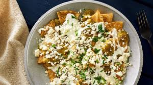

Comida de verdad para los mexicanos de verdad
Dale un toque de sabor a tu vida, conocenos y prueba nuestros asombrosos chilaquiles
Conocenos
Chilaquilocos es una microempresa creada con el proposito de satisfacer el paladar de chicos y grandes, como lo dice nuestro nombre, nos encargamos de la elaboracion de deliciosos chilaquiles de pollo, bistec y arrachera, a'adiendo un toque picante pero delicioso a tu vida

Como preparamos tus alimentos
Crujientes totopos bañados en una salsa verde bien sazonada, salteados hasta suavizarse ligeramente, coronados con crema, queso fresco, cebolla y, si quieres, un toque de pollo, bistec o arrachera, hay de todo para todos!
Haz click en la imagen para ver como los preparamos
Conoce nuestro menu
Te ofrecemos nuestros platillos mas deliciosos, con la mejor calidad
Atrevete a probarlos, no podras resistirte
Haz tus pedidos
Te llevamos tus chilaquiles hasta la comodidad de tu casa, contactanos
Para quejas y sugerencias contactanos al 55 3456 9089

Platillos
Ingredientes
Costos
Chilaquiles sencillos
Salsa verde, totopos, pollo,crema, queso rayado
$60 c/u
Chilaquiles con bistec
Salsa verde, totopos, bistec,crema, queso rayado
$70 c/u
Chilaquiles de arrachera
Salsa verde, totopos, arrachera,crema, queso rayado
$80 c/u